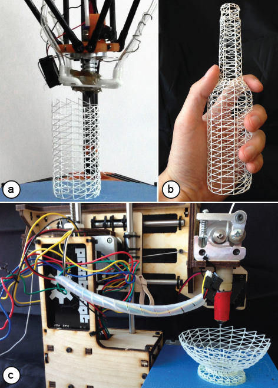
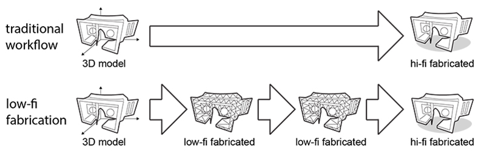
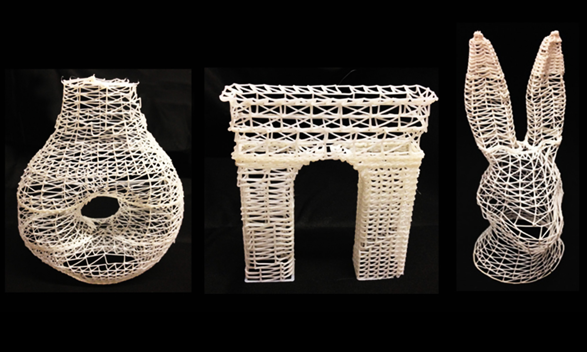
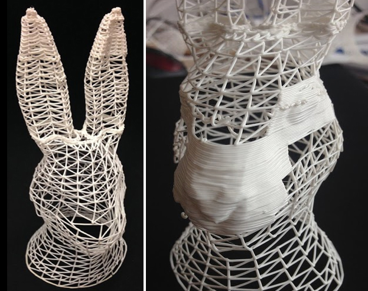
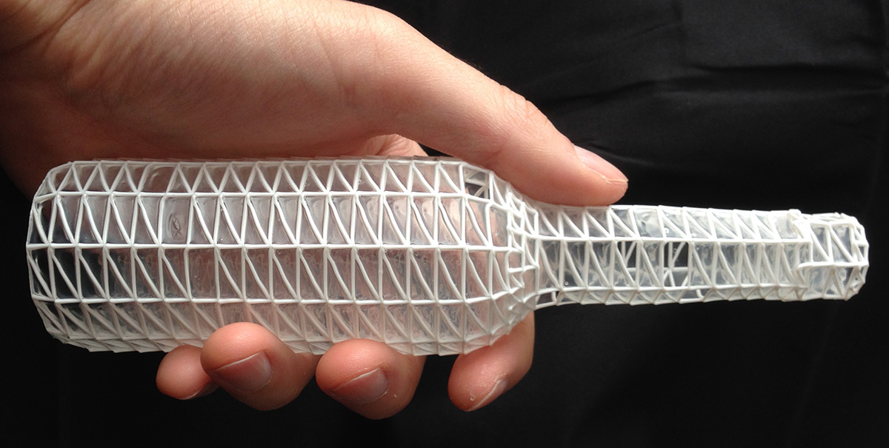
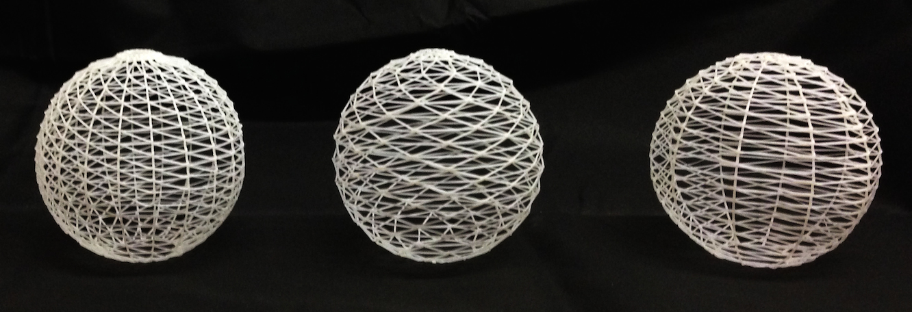

Publication
Mueller, S., Im, S., Gurevich, S., Teibrich, A., Pfisterer, L., Guimbretière, F., and Baudisch, P.
WirePrint: Fast 3D Printed Previews.
In Proceedings of
UIST ’14
, pp. 273-280.
Demo at UIST'14
DOIPaperVideoSlidesUIST Talk
Press

Figure 1: WirePrint prints 3D objects as wireframe previews. By extruding filament directly into 3D space instead of printing layer-wise, it achieves a speed-up of up to a factor of 10, allowing designers to iterate more quickly in the early stages of design. WirePrint achieves its maximum speed-up on (a) 3D printers based on the delta design, but also works on traditional Cartesian-based printers such as the PrintrBot shown in (c).
Even though considered a rapid prototyping tool, 3D printing is so slow that a reasonably sized object requires printing overnight. This slows designers down to a single iteration per day. With WirePrint, we propose to instead print low-fidelity wireframe previews in the early stages of the design process. Wireframe previews are 3D prints in which surfaces have been replaced with a wireframe mesh. Since wireframe previews are to scale and represent the overall shape of the 3D object, they allow users to quickly verify key aspects of their 3D design, such as the ergonomic fit.
To maximize the speed-up, we instruct 3D printers to extrude filament not layer-by-layer, but directly in 3D-space, allowing them to create the edges of the wireframe model directly one stroke at a time. This allows us to achieve speed-ups of up to a factor of 10 compared to traditional layer-based printing. We demonstrate how to achieve wireframe previews on standard FDM 3D printers, such as the PrintrBot or the Kossel mini. Users only need to install the WirePrint software, making our approach applicable to many 3D printers already in use today. Finally, wireframe previews use only a fraction of material required for a regular print, making it even more affordable to iterate.

Figure 2: WirePrint is a low-fi fabrication technique: all intermediate versions are fabricated as fast low-fidelity prints. Only the final version is fabricated as a hi-fidelity traditional 3D print.

Figure 3: WirePrint speeds up 3D printing by up to a factor of 10.

Figure 4: We can also print solid parts and wireframes together to preview detail in the context of the overall shape.

Figure 5: By dipping the wireframe object in glue, we can close the surfaces.

Figure 6: Different ways of printing a sphere as a wireframe. The left mesh is most sturdy since all vertical lines are aligned. The right mesh prints fastest but is less sturdy.